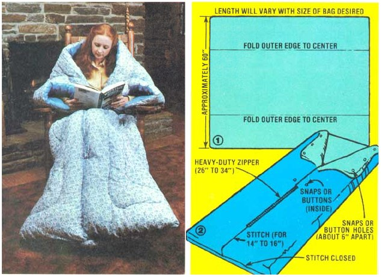

As you probably know, the human body functions as a pretty effective biological furnace ... and maintains a fairly constant 98.6°F temperature. Trouble is, although it seems as if such a heating capability ought to be able to keep us warm under most any circumstances, we're just not very well insulated by nature ... and so our body heat begins to dissipate as soon as it comes in contact with chilly air. When that happens, most folks resort to expensive-and perhaps soon to be in short supply- outside generators of heat.
But that doesn't have to be the case. You see, your lack of natural insulation can easily be compensated for with a snug sack ... a luxurious piece of apparel that will allow you to turn the ol' thermostat down and stay comfortable-as you read, write, nap, or do craft work-while relying on your own built-in energy source!
Unfortunately, the cozy cuddlers have become such "hot" items that they often sell for upward of $30 in retail outlets! There's no need to spend that kind of money, though, because-if you have an old comforter or quilt around the house (even one that's a little worn around the edges will do)-you can sew up your own "portable environment" in no more than a couple of hours. Furthermore, you'll only have to invest a total of about $2.00 (for a heavy-duty zipper and some snaps), and the sewing skills required for the project are strictly at a beginner's level!
Before you start cutting and sewing, you'll want to measure-from the shoulders to the feet-the body of the person who'll be enjoying the finished sack. Remember to add a foot or so to the resulting measurement ... to allow extra room for sitting and stretching. (As a general rule, snug sacks are made from pieces of quilted material about 60" in width. The lengths of store-bought warmers are usually about 64" for a small sack, 78" for a medium snuggler, and 85" for a large one. However, since you're making your own, you have a choice of tailoring the material to produce a custom-sized bag or simply stitching up whatever quilt you have on hand "as is" ... to avoid cutting-and then having to hem-the material.)
Now lay the quilt or comforter flat on the floor... with the surface that will form the outside of the snug sack facing up. Fold the long edges in toward the middle (as in Fig. 1) until they meet. Next, using a sturdy thread, sew the center seam up-from the bottom-for a length of about 14 to 16 inches ... and then stitch the bottom seam closed.
With that done, turn the bag right side out... then start at the top of the stitched portion of the center seam and install a 26" to 34" heavy-duty zipper (the length of this closure will depend upon the size of your sack). Then (using Fig. 2 as a guide) place six snaps or buttonholes-three on each side and spaced approximately six inches apart-along the inside of the top front edges. Finally, affix a corresponding snap or button just inside the front edges of the bag ... one to each side of the top of the zipper. (The various small fasteners will allow you to fold the bag's corners down and secure them in place to form adjustable sleeves.)
As you can see, it doesn't take much time or trouble to fabricate your own personal, energy-saving, warm enclosure. And-once you've finished the simple project-you can bundle up, sip a cup of hot chocolate, and find out just how much heat you can generate all by yourself. After all, the cozy bags aren't called snug sacks for nothin'!
|
 |
|
|